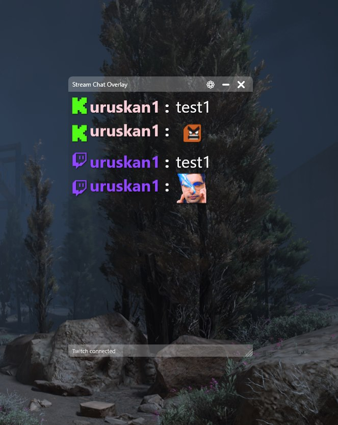
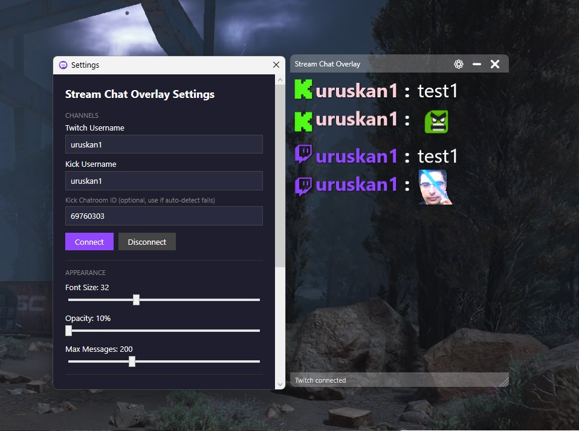
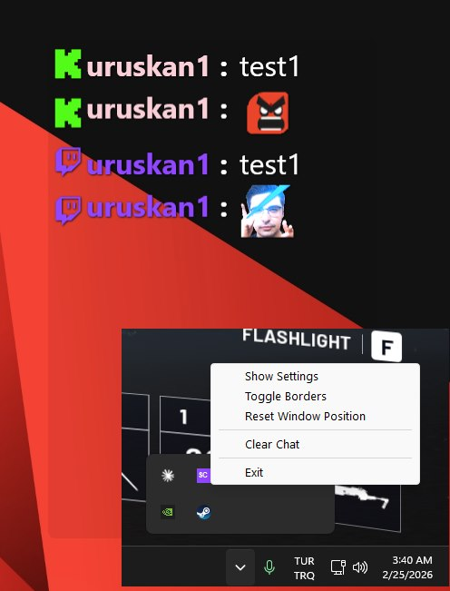

All posts
ToolStream Chat Overlay
Stream Chat Overlay
A transparent, always-on-top chat overlay for Twitch and Kick, for streamers with one monitor who want to see chat without alt-tabbing.
- C#
- WPF
- .NET
- Twitch
- Kick

Streaming from one monitor means chat is always behind the game. Stream Chat Overlay is a small window with no background that sits on top of everything, so chat stays readable over whatever you're playing. It's built with WPF on .NET 9: no browser sources, no Electron.
What it does
- Twitch and Kick in one window, each message marked with its platform.
- Native emotes from Twitch, Kick, BTTV, FrankerFaceZ and 7TV, animated ones included.
- No login. It reads public chat anonymously: Twitch over IRC, Kick over its Pusher WebSocket.
- Readable anywhere: text shadow, fonts from 10 to 72 pt with emotes that scale along, and adjustable opacity.
- Notification sounds, a resizable and draggable window, and a tray menu to hide the borders, clear chat or reset the position.

Built with
.NET 9 and WPF, TwitchLib for Twitch, KickLib for Kick, WpfAnimatedGif for animated emotes, CommunityToolkit.Mvvm and H.NotifyIcon for the tray. MIT licensed.
